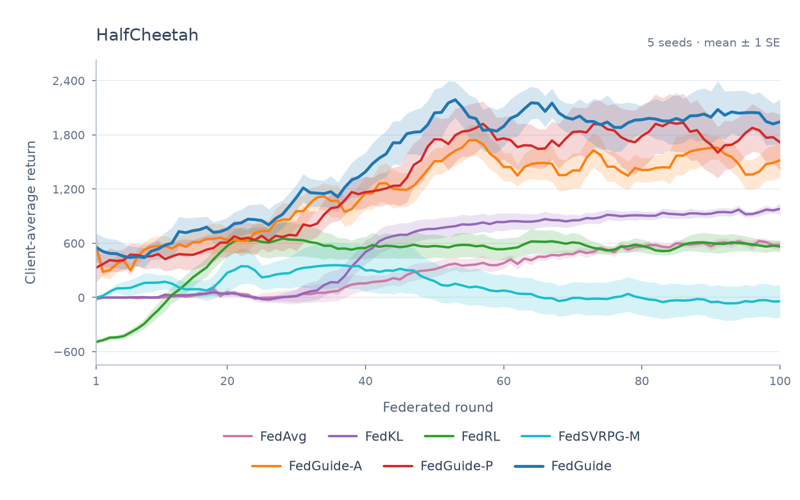

Represent behavior
Each client trains a diffusion prior on its own data, capturing multiple modes of supported actions.
Carnegie Mellon University
01 THE IDEA
Robots do not all inhabit the same world. Their dynamics, goals, and rewards differ. Averaging their policy parameters can blur distinct behaviors into a poor compromise.
FedGuide shares behavioral knowledge in distribution space. Diffusion priors capture each client’s supported actions; optimal transport builds a personalized mixture; a DICE value baseline guides local policy improvement.
A closer look at the method ↘02 THE METHOD
One shared framework.
A policy that stays local to each client.
Each client trains a diffusion prior on its own data, capturing multiple modes of supported actions.
Optimal transport matches client priors to experts and returns a mixture suited to each client.
A DICE baseline blends into advantage estimation to support local policy improvement.
03 POLICY DEMONSTRATIONS
Five main + four hard environments.
Every client, side by side.
Qualitative examples use the best seed per environment and method by last-10-round evaluation return, using the same selection rule for main and hard experiments. Methods may use different seeds, shown above each recording. The quantitative results below aggregate all five seeds.
04 EXPERIMENTAL RESULTS
Across the five main benchmarks
Compared with FedKL, the best external baseline
100 federated rounds per run
Client-average evaluation return over federated rounds

Curves show mean ± 1 standard error across five seeds. Final return is the last-10-round mean, reported as mean ± standard deviation across seeds.
Higher is better. The best value in each row is highlighted.
Final return: mean ± standard deviation of last-10-round means across five seeds.
A nuanced picture: FedGuide-P leads slightly on Reacher. MetaWorld10 remains challenging because clients differ in task semantics as well as dynamics; FedGuide has the best mean final return, while FedGuide-P has the best worst-seed return.
Hard environments. FedGuide has the highest mean final return on Walker2D-Hard and HalfCheetah-Hard. FedGuide-P leads on Reacher-Hard, while FedRL leads on Hopper-Hard. The hard results use the same five-seed evaluation protocol.
05 UNDERSTANDING THE COMPONENTS
The variants separate the role of policy averaging from the DICE value baseline.
| Method | OT–MoE prior | DICE baseline | Policy averaging |
|---|---|---|---|
| FedGuide-A | Yes | Yes | Yes |
| FedGuide-P | Yes | — | — |
| FedGuide | Yes | Yes | — |
FedGuide combines personalized distributional support with local, return-aware updates.
06 BUILD ON THIS WORK
@inproceedings{he2026fedguide,
title = {FedGuide: Diffusion Prior Alignment and Value Baseline Guidance
for Heterogeneous Federated Reinforcement Learning},
author = {He, Zhilin and Joshi, Gauri},
booktitle = {Conference on Robot Learning (CoRL)},
year = {2026}
}